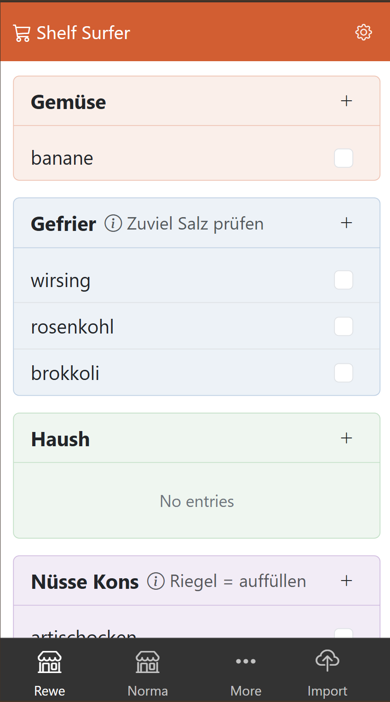

Sources: Coinbase x402 Bazaar (Agent discovery + mini‑apps) and Google Agent stack: A2A, AP2 (Agent Payments Pro), Agent Dev Kit (Vertex AI)
TL;DR — Why this matters
- Discovery + Distribution (x402): Marketplace to publish, find and run agentic mini‑apps with crypto-native rails.
- Execution + Tools (Agent Dev Kit): Opinionated scaffolding on Vertex AI to build tool-using agents fast.
- Trust + Payments (AP2/A2A): Built-in authenticated actions and programmatic payments to let agents transact safely.
What each piece is
Coinbase x402 Bazaar
Google A2A
- Authenticated Actions: Standard to let agents perform user-approved actions across services.
- Benefit: Clear consent + security model; reduces custom OAuth plumbing per tool.
Google AP2 (Agent Payments Pro)
- Programmatic payments: Let agents initiate and settle payments under policy and user consent.
- Use cases: Booking, shopping, subscriptions, payouts between agents.
- Risk guardrails: Limits, verifications, auditability baked in.
Agent Dev Kit (Vertex AI)
- Scaffold: Tools, memory, routing, evals; runs on Vertex AI with Google infra.
- Quickstart: Create an agent, register tools, wire flows, deploy an endpoint.
- Quickstart
How they fit together
- Build: Start on Vertex AI Agent Dev Kit for tool-enabled agents.
- Transact: Add A2A for secure actions and AP2 for payments under user policies.
- Distribute: Ship as a mini‑app to x402 Bazaar for discovery and monetization.
Practical Dev Notes
- Stack sketch: Frontend mini‑app + Vertex agent backend; connect Coinbase wallet; enforce AP2 policies.
- Auth flows: User approves capabilities (A2A), sets spend limits (AP2), agent executes within bounds.
- Observability: Log tool calls, payment intents, approvals; keep audit trails.
- Monetization: Listing + in‑app payments; consider tiers and usage-based pricing.
Risks and guardrails
- Over-permissioned agents: Minimize scopes; require explicit consent per sensitive action.
- Payment abuse: Rate limits, per‑txn caps, anomaly detection, mandatory confirmations.
- Tool drift: Version tools; run evals; freeze tool schemas for listed mini‑apps.
Bottom line
With x402 for discovery, A2A/AP2 for trusted actions and payments, and Vertex Agent Dev Kit for execution, the agent stack now covers build → transact → distribute. That unlocks real, paid agent experiences beyond demos.